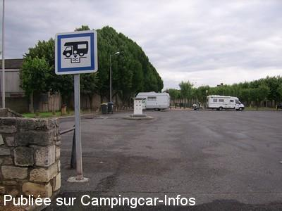
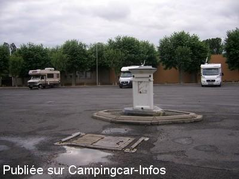

ASN = Aire de services avec stationnement nuit possible de :
AIGUEPERSE
(N° 714)
Accès/adresse :
Place du Champ de Foire
63260 AIGUEPERSE
63260 AIGUEPERSE
Latitude : (Nord) 46.02634° Décimaux ou 46° 1′ 34′′
Longitude : (Est) 3.20313° Décimaux ou 3° 12′ 11′′
Tarif : 2015
Stationnement gratuit
Eau ou une 1 H d'électricité : 2 €
Type de borne : RACLET
Services :


Commerces à proximité
Proche lavomatic
Jeux pour enfants
Promenades
Autres informations :
Ouvert toute l'année
Sauf du 17 au 28/08
Tel mairie :+33(0)473 636 034
http://www.mairie-aigueperse63.fr

Le 05/07/2010 par voyageur 65

Le 28/06/2010 par Eric
de
Plaimpied
le 13/08/2015 :
Je suis passé sur cette aire de C.C. qui est est un parking a partager avec les voitures le 01/08/2015.
Village sans intérêt mais la nuit a été très calme.
Je suis passé sur cette aire de C.C. qui est est un parking a partager avec les voitures le 01/08/2015.
Village sans intérêt mais la nuit a été très calme.
de
Daniel L.
le 07/04/2015 :
Nous y sommes encore passés fin mars 2015.
Bien pratique et calme
Nous y sommes encore passés fin mars 2015.
Bien pratique et calme
de
kiko
le 01/09/2013 :
aire et village triste
que du béton et une nuée de mouche car les poubelles sont a proximités.
au bout de 15 minutes nous sommes reparti car il n y a aucune convivialité a ce lieu.
aire et village triste
que du béton et une nuée de mouche car les poubelles sont a proximités.
au bout de 15 minutes nous sommes reparti car il n y a aucune convivialité a ce lieu.
de
Didier27
le 26/09/2012 :
aire tres calme. N'oubliez pas d'aller faire un tour au magasin:Petit Casino. La patronne vient du Cantal et elle a des fromages fermiers exellents et pas trop cher
aire tres calme. N'oubliez pas d'aller faire un tour au magasin:Petit Casino. La patronne vient du Cantal et elle a des fromages fermiers exellents et pas trop cher
de
fcdeux
le 11/03/2012 :
Aire calme, village à proximité (avec lavomatique).
Borne flots bleus
Aire calme, village à proximité (avec lavomatique).
Borne flots bleus
de
adeline
le 13/04/2009 :
Aire très grande et très pratique. Cette dernière est très bien indiquée à l'entrée de la commune.
De plus elle est bien située à proximité du bourg et de la boulangerie.
Aire très grande et très pratique. Cette dernière est très bien indiquée à l'entrée de la commune.
De plus elle est bien située à proximité du bourg et de la boulangerie.
de
BRUNOSM
le 24/08/2007 :
Pour notre 1er arrét dans une aire CC, nous avons trouvé celle-ci très sympathique. Bravo à la municipalité!
Pour notre 1er arrét dans une aire CC, nous avons trouvé celle-ci très sympathique. Bravo à la municipalité!
de
Stan
le 30/06/2006 :
Aire Place du champ de foire. Super endroit, c'était notre première en camping-car. Assez calme, nuit tranquille, borne très pratique. Petit village sympathique.
A recommander!
Aire Place du champ de foire. Super endroit, c'était notre première en camping-car. Assez calme, nuit tranquille, borne très pratique. Petit village sympathique.
A recommander!